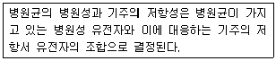
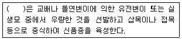
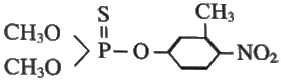
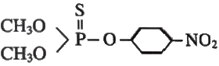
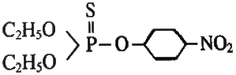
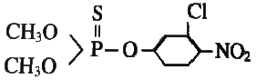
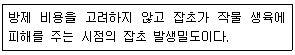

식물보호기사 (2016-10-01 기출문제)
1과목: 식물병리학
1. 벼 도열병의 방제법으로 옳지 않은 것은?
- 논바닥이 마르지 않도록 한다.
- 찬물을 직접 논에 넣지 않는다.
- 볏짚을 퇴비로 사용할 경우에는 충분히 부숙시켜서 사용한다.
- 병이 상습적으로 발생하는 곳에서는 레이스 특이적 저항성을 나타내는 품종을 사용한다.
(정답률: 60%)

2. 보르도액에 대한 설명으로 옳지 않은 것은?
- 보호살균제이다.
- 황산구리와 석회를 혼합해서 만든다.
- 포도나무 흰가루병 방제를 위해 사용하였다.
- 프랑스의 학자 Millardet에 의해 처음으로 개발이 되었다.
(정답률: 68%)
3. 담자균에 의한 병이 아닌 것은?
- 보리 줄기녹병
- 벼 깨씨무늬병
- 보리 겉깜부기병
- 벼 잎집무늬마름병
(정답률: 50%)
4. 식물병원성 세균이 식물의 세포벽을 붕괴 시키기 위해 생성하는 효소가 아닌 것은?
- 타닌분해효소
- 펙틴분해효소
- 단백질분해효소
- 셀룰로오스분해효소
(정답률: 67%)
5. 벼 키다리병의 병징 형성 원인으로 병원균이 분비하는 주요 호르몬은?
- 옥신
- 에틸렌
- 지베렐린
- 사이토키닌
(정답률: 85%)
6. PAN에 의한 식물피해로 옳은 것은?
- 줄기혹
- 뿌리썩음
- 꽃의엽화
- 잎의은색화
(정답률: 69%)
7. 식물바이러스병 진단법 중 지표식물을 이용하는 방법은?
- 혈청학적 진단
- 해부학적 진단
- 생물학적 진단
- 현미경적 진단
(정답률: 78%)
8. 벼 흰잎마름병 예방 및 방제에 대한 설명으로 옳지 않은 것은?
- 볍씨 소독을 철저히 한다
- 만코제브수화제를 살포한다
- 질소질 비료의 가용을 피한다
- 폭풍우에 의해 묘가 침수 되지 않도록 한다
(정답률: 63%)
9. 토양습도가 작물이 생육하기에 적합한 상태보다 건조할 때 잘 발생하는 병은?
- 감자역병
- 고추모잘록병
- 오이덩굴쪼김병
- 배추무사마귀병
(정답률: 72%)
10. 잣나무 잎떨림병의 1차 전염원은?
- 자낭포자
- 분생포자
- 병자포자
- 후막포자
(정답률: 65%)
11. 소나무 재선충병에 대한 설명으로 옳지 않은 것은?
- 솔수염 하늘소가 매개충이다.
- 잣나무에는 발생되지 않는다.
- 아바멕틴 유제를 나무주사하여 방제한다.
- 피해를 입어 고사한 소나무는 벌채하여 메탐소듐 액제로 훈증 처리한다.
(정답률: 74%)
12. 여름포자를 형성하지 않는 녹병균은?
- 향나무 녹병균
- 소나무혹병균
- 포플러 잎 녹병균
- 잣나무 털녹병균
(정답률: 53%)
13. 다음 설명에 해당하는 이론은?

- 유전자 대 유전자 이론
- 병원성 대 저항성 이론
- 유전자 대 비유전자 이론
- 병원성 대 비병원성 이론
(정답률: 68%)
14. 그램염색에서 나머지 셋과 다른 반응을 보이는 것은?
- Erwinia
- clavibacter
- acidovorax
- agrobacterium
(정답률: 61%)
15. 파이토플라스마에 의한 병이 아닌 것은?
- 뽕나무 오갈병
- 벚나무 빗자루병
- 양파 누른오갈병
- 대추나무 빗자루병
(정답률: 69%)
16. 플라스크 모양의 자낭과 머리부분에 공구(ostiole)가 있는 것은?
- 자낭각
- 자낭구
- 자낭반
- 나출자낭
(정답률: 58%)
17. 병원균이 기주 교대를 하는 이종기생균은?
- 배나무 불마름병
- 사과나무 흰가루병
- 배나무 붉은별무늬병
- 사과나무 검은별 무늬병
(정답률: 79%)
18. 사과나무 부란병균의 월동처는?
- 토양
- 병든과실
- 병든낙엽
- 병든 줄기 및 가지
(정답률: 68%)
19. 오이에 발생하지만 표징을 보기 어려운 병은?
- 균핵병
- 노균병
- 흰가루병
- 모자이크병
(정답률: 70%)
20. 식물병의 생물적 방제에 대한 설명으로 옳은 것은?
- 신속하고 정확한 효과를 기대할 수 있다.
- 천적미생물은 대부분 잎이나 줄기에서 얻는다.
- 넓은지역에 광범위하게 사용하는데 가장 효과적이다.
- 미생물은 길한작용, 기생, 상호경쟁 또는 병저항성 유도를 이용하여 병을 억제한다.
(정답률: 79%)
2과목: 농림해충학
21. 중력에 대한 주성을 의미하는 것은?
- 주화성
- 주온성
- 주지성
- 주용성
(정답률: 78%)
22. 해충 방제에서 경제적 피해수준이란?
- 일반적인 환경조건에서 해충의 최저밀도
- 일반적인 환경조건에서 해충의 최고밀도
- 경제적 피해가 나타나는 해충의 최저밀도
- 경제적 피해가 나타나는 해충의 최고밀도
(정답률: 73%)
23. 봄에 수목주변의 잡초를 제거하여 피해를 줄일수 있는 해충은?
- 꽃매미
- 소나무좀
- 박쥐나방
- 포도뿌리혹벌레
(정답률: 65%)
24. 화분 매개곤충으로 사과의 수분작용에 활용되는 것은?
- 금좀벌
- 머리뿔가위벌
- 콜레마니진디벌
- 온실가루이좀벌
(정답률: 60%)
25. 애멸구에 대한 설명으로 옳지 않은 것은?
- 천적은 날개집게벌, 애꽃노린재 등이 있다.
- 2모작 맥류재배를 하면 애멸구가 많이 발생한다.
- 약충과 성충은 벼의 즙액을 빨아먹어 피해를 준다.
- 중국으로부터 비래하지만 우리나라에서 월동은 불가능하다.
(정답률: 77%)
26. 해충별 피해를 줄일 수 있는 생태적 방제 방법으로 옳지않은 것은?
- 진딧물 : 혼작재배
- 배추잎벌 : 밀식재배
- 방아벌레 : 윤작재배
- 벼굴파리 : 관개 수온을 올림
(정답률: 67%)
27. 잎을 갉아먹어 피해를 주는 해충이 아닌 것은?
- 솔나방
- 향나무하늘소
- 오리나무잎벌레
- 잣나무넓적잎벌
(정답률: 68%)
28. 곤충의 중추신경계가 아닌 것은?
- 전대뇌
- 중대뇌
- 측대뇌
- 후대뇌
(정답률: 71%)
29. 외국으로부터 침입한 해충은?
- 벼잎벌레
- 온실가루이
- 콩잎말이나방
- 복숭아혹진딧물
(정답률: 79%)
30. 벼 줄무늬 잎마름병을 매개하는 곤충은?
- 애멸구
- 벼멸구
- 흰등멸구
- 끝동매미충
(정답률: 75%)
31. 진딧물이 교미 없이 암컷 혼자 번식하는 것은?
- 단위생식
- 다배발생
- 기주전환
- 완전변태
(정답률: 85%)
32. 내충성 품종을 이용한 방제법의 특징으로 옳지 않은 것은?
- 해충종류에 대한 특이성이 있다.
- 효과는 누적되며 장기간에 걸쳐 지속된다
- 재배환경에 따라 저항성강도가 바뀔수 있다.
- 내충성 품종 육종에서 보급까지 단기간 소요된다.
(정답률: 78%)
33. 생육 중인 마늘이 하엽부터 고사하기 시작하여 포기의 인경을 파내어 보았더니 구더기 같은 회백색의 유충이 발견되었따면 어느 해충의 피해인가?
- 파밤나방
- 고자리파리
- 담배거세미나방
- 아메리카잎굴파리
(정답률: 76%)
34. 곤충의 표피 중 가장 바깥쪽에 있는 것은?
- 왁스층
- 원표피
- 기저막
- 시멘트층
(정답률: 69%)
35. 신상문,검상문,환상문이 뚜렷하게 나타나는 밤나방과 해충은?
- 감자나방
- 거세미나방
- 숯검은밤나방
- 검거세미나방
(정답률: 55%)
36. 수컷 해충의 생식기관이 아닌 것은?
- 저정낭
- 부속샘
- 수정관
- 부속지
(정답률: 43%)
37. 곤충의 내분비계에 해당하는 기관이 아닌 것은?
- 앞가슴샘
- 알타라체
- 존스톤기관
- 카디아카체
(정답률: 77%)
38. 파리목 해충의 분류 형태적인 특성으로 옳지 않는 것은?
- 유충의 다리는 3쌍이다
- 번데기는 주로 비저작용 나용이다.
- 뒷날개는 퇴화되어 평균곤으로 발달하였다.
- 성충은 빠는 입 형태이고 유충은 씹는입 형태이다
(정답률: 52%)
39. 곤충의 소화기관으로 전장에 있고, 중장으로 넘어가는 먹이의 역류를 막거나 단단한 음식물을 부수는 역할을 하는 것은?
- 전위
- 인두
- 식도
- 모이주머니
(정답률: 75%)
40. 해충의 발생예찰 방법으로 옳지 않은 것은?
- 화학적 방법
- 통계적 방법
- 실험적 방법
- 야외조사 및 관찰에 의한 방법
(정답률: 67%)
3과목: 재배학원론
41. 다음중 덩이줄기(괴경) 식물은?
- 연
- 마늘
- 글라디올러스
- 토란
(정답률: 69%)
42. 작물육종 시 일반조합능력을 검정하기 위한 조합능력 검정법은?
- 2면교배
- 3계교잡
- 톱교배
- 단교배
(정답률: 54%)
43. 다음 중 복교잡에 의한 육종효과가 가장 높은 작물은?
- 옥수수
- 보리
- 콩
- 감자
(정답률: 62%)
44. 유전적으로 고정된 품종이라도 그 내병성이 시일이 경과함에 따라 비교적 쉽게 변동하는 가장 기본적인 원인은?
- 내병성의 생리적 요인이 변화하기 때문
- 침해병원체의 계통이 변화하기 때문
- 기상환경이 변화하기 때문
- 재배법이 변화하기 때문
(정답률: 56%)
45. 1대잡종 육종에서 조합능력의 검정법으로 볼수 없는 것은?
- 톱교배
- 단교배
- 이면교배
- 여교배
(정답률: 54%)
46. 우량품종 종자갱신의 채종체계는?
- 원종포-원원종포-채종포-기본식물포
- 기본식물포-원원종포-원종포-채종포
- 채종포-원원종포-원종포-기본식물포
- 기본식물포-원종포-원원종포-채종포
(정답률: 70%)
47. 테트라졸리움 방법에 의한 종자의 활력검사에 대한 설명이 잘못된 것은?
- 종자 조직의 호흡에 의해 방출된 탈수소효소는 수소이온을 생성한다.
- 호흡능이 왕성할수록 테트라졸리움과 결합할 수 있는 수소이온의 양이 많기 때문에 진한 붉은색으로 착색된다
- 산화상태인 테트라졸리움 염의 환원에 의하여 수소이온을 받아들인다.
- TTC용액의 농도는 볏과 2.0%, 콩과 5.0%가 알맞다.
(정답률: 64%)
48. 다음 중 벼의 관수해가 가장 심하게 나타나는 수질은?
- 흐르는 맑은 물
- 흐르는 흙탕물
- 정체한 맑은 물
- 정체한 흙탕물
(정답률: 83%)
49. 파종 전에 수분을 가하여 종자가 발아에 필요한 생리적인 준비를 갖추게 함으로써 발아의 속도와 균일성을 높이는 방법은?(오류 신고가 접수된 문제입니다. 반드시 정답과 해설을 확인하시기 바랍니다.)
- 최아
- 프라이밍
- 박피제거
- 종자코팅
(정답률: 66%)
50. ( ）에 알맞은 내용은?

- 영양계선발
- 타가수정선발
- 자가수정선발
- 배수성선발
(정답률: 65%)
51. 벼 유숙기(8월 말 ~9월 초) 의 광부족 피해와 거리가 가장 먼 것은?
- 1수립수 감소
- 등숙비율감소
- 1립중 감소
- 수량감소
(정답률: 55%)
52. 다음 중 최적용기량이 가장 낮은 작물은?
- 강낭콩
- 보리
- 양파
- 양배추
(정답률: 45%)
53. 작물재배에 있어서 피복의 효과로 틀린 것은?
- 습도의 감소
- 토양의 건조방지
- 지온변화의 억제
- 토양의 침식방지
(정답률: 70%)
54. 주로 영양번식으로 번식시키는 작물은?
- 고구마
- 옥수수
- 밀
- 오이
(정답률: 80%)
55. 다음 중 요수량이 가장 적은 작물은?
- 호박
- 완두
- 감자
- 수수
(정답률: 77%)
56. (A*B)*(C*D)와 같은 교잡 방법은?
- 단교잡법
- 여교잡법
- 삼계교잡법
- 복교잡법
(정답률: 72%)
57. 멘델의 유전법칙과 관계가 먼 것은?
- 분리의 법칙
- 진화의 법칙
- 독립의 법칙
- 순수의 법칙
(정답률: 62%)
58. 정식전에 정식지의 불량 환경에 묘가 잘 견딜 수 있게 적응시키는 과정을 무엇이라 하는가?
- 경화
- 도장
- 추대
- 개화
(정답률: 68%)
59. 작물의 기상생태형과 재배적 특성에 관한 설명이 잘못된 것은?
- 조기수확을 목적으로 조파조식을 할 때에는 감온형이 알맞다.
- 만식적응성은 감광형이 감온형보다 크다.
- 묘대일수감응도는 감온형이 감광형보다 낮다.
- 출수,성숙을 앞당기지 않고 파종, 모내기를 앞당겨서 생육기간을 연장시켜 증수를 꾀하려고 할 때에는 감광형이 가장 알맞다.
(정답률: 50%)
60. 뿌리에서 합성되어 물관을 통해 수송되며, 측지발생을 촉진하고 세포의 분열과 분화에 관여하는 식물 생장조절물질은?
- 옥신
- 지베렐린
- 시토키닌
- 에틸렌
(정답률: 52%)
4과목: 농약학
61. 농약 유효성분의 효력을 증진시키기 위하여 사용되는 협력제가 아닌 것은?
- Sulfoxide
- Sesamex
- Piperonyl butoxide
- Fenclorin
(정답률: 40%)
62. 말라치온에 대한 설명으로 틀린 것은?
- 접촉독체이다
- 적용대상의 범위가 넓다
- 대표적인 고독성 약제이다
- 선택성의 침투이행성약제이다
(정답률: 44%)
63. 농약의 제제 중 유효성분의 작용력을 충분히 발휘시키기 위해서는 제제 형태나 유효성분에 대응한 적당한 사용법을 선택하는 것이 중요하다. 다음 중 지상액제 살포방법이 아닌 것은?
- 수면시용법
- 분무법
- 미스트법
- 스프링클러법
(정답률: 80%)
64. 농약 원제를 물에 녹이고 동결 방지제를 가하여 제제화한 제형은?
- 유제
- 액제
- 수화제
- 수용제
(정답률: 56%)
65. 농약 중독에 대한 응급조치 방법으로 가장 거리가 먼 것은?
- 응급조치의 근본적인 방법은 중독의 원인물질을 가능한 빨리 환자의 체외로 제거하는 것이다.
- 경피적으로 중독 시에는 오염된 작업복을 벗기고 피부를 비눗물로 깨끗이 씻겨야 한다.
- 경기도적으로 중독되었을 때는 환자를 신선한 장소로 옮겨 의복을 느슨하게 하여 토하게 한다.
- 중독되어 경련을 일으키거나 그 증상을 보일 때는 따뜻한 소금물을 마시게 하여 토하에 한다.
(정답률: 65%)
66. 제초제의 살초작용에 따른 기작을 틀리게 설명한 것은?
- 이행형 제초제는 어떤 종류의 잡초이든 접촉된 곳에서 식물의 대사작용을 촉진시키는 것
- 접촉형 제초제는 약제가 부착한 곳의 생세포에 작용하여 살초효과를 나타내는 것
- 호르몬형 제초제는 식물호르몬의 생리적인 불균형 상태를 일으켜 살초효과를 나타내는 것
- 비호르몬형 제초제는 호르몬 작용을 지니고 있지 않은 것
(정답률: 72%)
67. 농약 혼용 시 주의하여햐 할 사항으로 틀린 것은?
- 유기인계와 알칼리성 농약은 혼용하지 않는다.
- 노동력 절감을 위하여 무조건 많은 종류의 약제를 혼용한다.
- 되도록 농약과 비료는 혼합하여 살포하지 않는다.
- 혼용가부표를 반드시 확인하여 혼용여부를 결정한다.
(정답률: 84%)
68. 농약사용법에 의한 약해가 아닌 것은?
- 근접살포에 의한 약해
- 동시 사용으로 인한 약해
- 불순물 혼합에 의한 약해
- 섞어 쓰기 때문에 일어나는 약해
(정답률: 71%)
69. 우리나라의 농약의 독성구분 중 맞지 않는 것은?
- 무독성
- 보통독성
- 저독성
- 고독성
(정답률: 72%)
70. 다음 중 유기인계 살충제는?
- EPN
- Endosulfan
- 2,4-D
- BPMC
(정답률: 57%)
71. 제충국의 유효성분은?
- rotenone
- pyrethrin
- pyrethrolone
- allethrin
(정답률: 79%)
72. 미생물 살충제인 BT의 특성에 대한 설명으로 틀린것은?
- 유효성분은 내독소 단백질로서 곤충의 장내에서 독소작용을 한다.
- 독성발현 시간을 매우 짧으며 화학농약과 대등한 살충효과를 얻는다.
- 나비목이나 파리목 곤충 등 숙주범위가 상당이 넓다.
- 산성조건에서 용해되어 살충성 독소로 작용한다.
(정답률: 48%)
73. 95%인 원제 2kg으로 2%분제를 만들려고 한다. 이때 소요되는 증량제의 양은 몇kg인가?
- 73
- 83
- 93
- 103
(정답률: 72%)
74. 원제의 독성정도에 따른 구분에서 급성독성 물질은 입이나 피부를 통하여 1회 또는 24시간 이내에 수회로 나누어 투여하거나 몇 시간 동안 흡입노출시켰을 때 유해한 영향을 미치는 물질을 말하는가?
- 1시간
- 4시간
- 12시간
- 24시간
(정답률: 55%)
75. 살충제 농약의 작용기작이 바르게 연결되어 있는 않은 것은?
- 유기인계-신경전달저해
- 유기염소계-자극전달교란
- 유기수은계-단백질응고
- 데리스제-피부부식
(정답률: 57%)
76. 증기압이 높은 농약의 원제를 액상, 고상 또는 압축가스 상으로 용기 내에 충전하여 용기를 열 때 유효성분이 대기 중으로 기화하여 병해충을 방제하도록 설계된 제형은?
- 훈연제
- 연무제
- 훈증제
- 분의제
(정답률: 71%)
77. 유기인계 살충제에 있어서 인산기의 화합물과 티오 인산기의 화합물에 대한 설명으로 옳은 것은?
- 인산기의 화합물이 티오인산기의 화합물보다 생리적 작용이 강하다.
- 인산기의 화합물이 티오인산기의 화합물보다 안정하다.
- 두 화합물 모두 생리적 작용 및 안정성이 같다
- 인산기의 화합물이 티오인산기의 화합물보다 안정하나 생리적 작용은 낮다
(정답률: 46%)
78. 다음 중 파라치온의 구조식은?




(정답률: 48%)
79. 훈증제 농약의 구비 조건으로 옳지 않은 것은?
- 기름이나 물에 잘 녹아야 한다.
- 휘발성이 커서 확산이 잘 되어야 한다.
- 훈증 목적물에 이화학적 변화를 일으키지 않아야한다.
- 비 인화성이어야 하고 침투성이 커야한다.
(정답률: 72%)
80. 다음 중 이행형 제초제가 아닌 것은?
- 이사디
- 엠시피
- 파라쿼트
- 리뉴론
(정답률: 61%)
5과목: 잡초방제학
81. 토양에 처리한 제초제는 분해되어 제초제로써 효력이 소실된다. 이러한 제초제가 효력이 소실되는 주된 과정으로 거리가 먼 것은?
- 광분해
- 열분해
- 화학적분해
- 미생물에의한분해
(정답률: 54%)
82. 잡초와 작물과의 경합조건에 대한 설명으로 옳지 않은 것은?
- 잡초와 작물간에 경합이 약할 때 작물 수량은 감소한다.
- 초종이 다른 식물 간에 일어나는 경합을 종간경합이라고 한다.
- 같은 초종 중에서 개체 간에 일어나는 경합을 종내경합이라고 한다.
- 식물경합은 둘이상의 식물간에 각각 어느특정요인이나 물질이 필요량보다 부족할 때 일어난다.
(정답률: 75%)
83. 토양 환경과 잡초의 출현에 대한 설명으로 옳지 않은 것은?
- 종자가 무거울수록 발생심도가 깊다.
- 토양이 과습하면 출현율이 낮아진다.
- 토양이 건조하면 출아율이 낮아진다.
- 사질토는 중점토보다 발생심도가 얕다.
(정답률: 69%)
84. 작물, 잡초, 제초제의 연결이 옳지 않은 것은?
- 벼, 피, 뷰타클로르 입제
- 잔디, 크로바, 디캄바 액제
- 콩, 방동사니 , 이사-디 액제
- 사과, 일년생 잡초, 시마진 수화제
(정답률: 58%)
85. 밭의 잡초 발생에 대한 설명으로 옳은 것은?
- 봄에 보리밭에서는 냉이와 뚝새풀등이 우점한다.
- 여름에 콩밭에서는 벼룩나물과 별꽃 등이 우점한다.
- 맥류 포장에서 월동 후보다 월동 전의 잡초 피해가 더 크다.
- 겨울 작물 포장에서 잡초는 서리가 내리기 직전에 발생량이 최대이다.
(정답률: 49%)
86. 지면을 피복할 경우 잡초에 미치는 영향으로 옳지 않은 것은?
- 빛과 산소 공급이 차단된다.
- 잡초의 발아심도가 깊어진다.
- 주,야간의 온도차가 커져 잡초종자의 발아 수가 격감된다.
- 잡초가 물리적으로 질식하거나 출아가 억제되기도 한다.
(정답률: 61%)
87. 주로 논에 발생하는 다년생 잡초는?
- 가래, 올방개
- 올미, 명아주
- 냉이, 개비름
- 바늘골 , 참방동사니
(정답률: 67%)
88. 잡초의 발아습성 중 발아계절성에 대한 설명으로 옳은 것은?
- 오랜 기간에 걸쳐 지속적으로 발아한다.
- 계절에 따른 온도에 감응하여 발아한다.
- 일정한 간격을 가지고 최고의 발아율을 나타낸다.
- 계절에 따른 일장에 감응하여 휴면을 타파하고 발아한다.
(정답률: 66%)
89. 살포된 제초제가 고체나 액체 상태로부터 기체 상태로 되어 대기중으로 소실되는 현상은?
- 증발
- 휘발
- 이동
- 분해
(정답률: 69%)
90. 사초과 잡초에 해당 하지 않는 것은?
- 여뀌
- 올방개
- 물고랭이
- 파대가리
(정답률: 45%)
91. 여름에 발생하는 화본과 밭잡초는?
- 반하. 쇠비름
- 깨풀, 나도겨풀
- 바랭이, 강아지풀
- 참방동사니 , 물달개비
(정답률: 61%)
92. 경엽처리 제초제에 대한 설명으로 옳지 않은 것은?
- 약제가 잎에 잘 묻도록 일반적으로 전착제를 첨가하여 처리한다.
- 잎 표층을 통과한 약제는 물관이나 체관을 통해 하부 또는 상부이동을 한다.
- 극성이 높은 친수성 제초제는 잎의 큐티클을 잘 통과하기 때문에 경엽처리 활성이 강하다.
- 잡초마다 잎 표면으로부터 세포 내 작용점까지의 제반 성질이 다르므로 동일한 제초제라도 효과가 다르게 나타날 수 있다.
(정답률: 70%)
93. 북아메리카 원산으로 식물체당 생산되는 종자수가 가장 많고 주로 실생법으로 번식하는 것은?
- 피
- 망초
- 마디풀
- 사마귀풀
(정답률: 63%)
94. 다년생잡초의 특징으로 옳지 않은 것은?
- 대부분 영양번식 기관이 있다.
- 게넷으로 번식이 가능하다.
- 인경,구경,괴근 및 포복근 등의 재생력을 지닌 번식 기관이 있다.
- 라멧은 휴면성과 다양한 유전자형을 구비하여 불리한 환경에서도 생존한다.
(정답률: 47%)
95. 다음에 설명하는 용어는?

- 잡초허용한계밀도
- 수량체감한계밀도
- 잡초피해한계밀도
- 경제적허용한계밀도
(정답률: 59%)
96. 생물학적 잡초 방제법에 대한 설명으로 옳지 않은 것은?
- 기생성 생물을 이용한다.
- 특별한 종류의 잡초만을 가해해야 한다.
- 잡초보다 번식속도가 느려야 효과적이다
- 새로운 지역에서 환경 적응성이 좋아야 한다.
(정답률: 79%)
97. 가시나 갈고리 등을 이용하여 사람이나 동물에 부착해서 종자가 이동하는 잡초가 아닌 것은?
- 메귀리
- 소리쟁이
- 도꼬마리
- 도깨비바늘
(정답률: 66%)
98. Uracil 및 Urea 계열 제초제를 경엽에 처리한 경우에 제초 성분이 이동하는 주요 경로는?
- apoplast
- symplast
- cambium cell
- casparian strip
(정답률: 56%)
99. 작물이 방출하는 화학물질이 다른 식물이나 잡초의 발아와 생장에 영향을 미치는 현상은?
- 상호작용
- 길항작용
- 상승작용
- 상호대립억제작용
(정답률: 69%)
100. 단자엽 잡초의 형태적 특징으로 옳지 않은 것은?
- 잎은 대부분 평행맥이다.
- 뿌리는 섬유근계의 관근이다.
- 산재된 유관속의 관상경을 가진다.
- 생장점은 줄기 중간의 절간 부위에 있다.
(정답률: 62%)